Imagem nula com biases do conjunto W03
zero_com_bias_W03
Esperado[127, 0]
Observado[0, 127]
Resposta no ciclo 177, após 37 ciclos. Divergências nas saídas: 2.
DOCUMENTAÇÃO TÉCNICA / SYSTEMVERILOG
Documentação da arquitetura, da verificação funcional e da implementação física de uma rede neural convolucional descrita em SystemVerilog. O projeto utiliza uma bancada UVM e um fluxo de síntese e implementação com a biblioteca ASAP7.
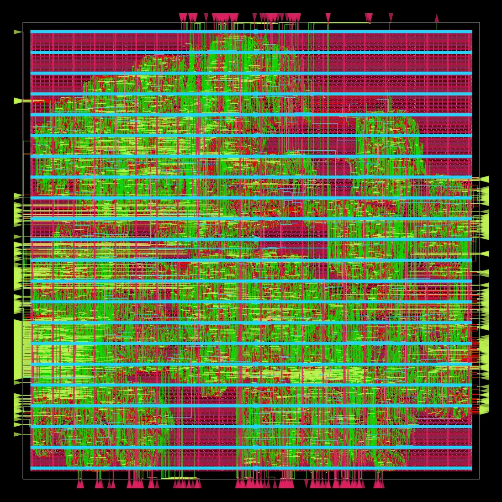
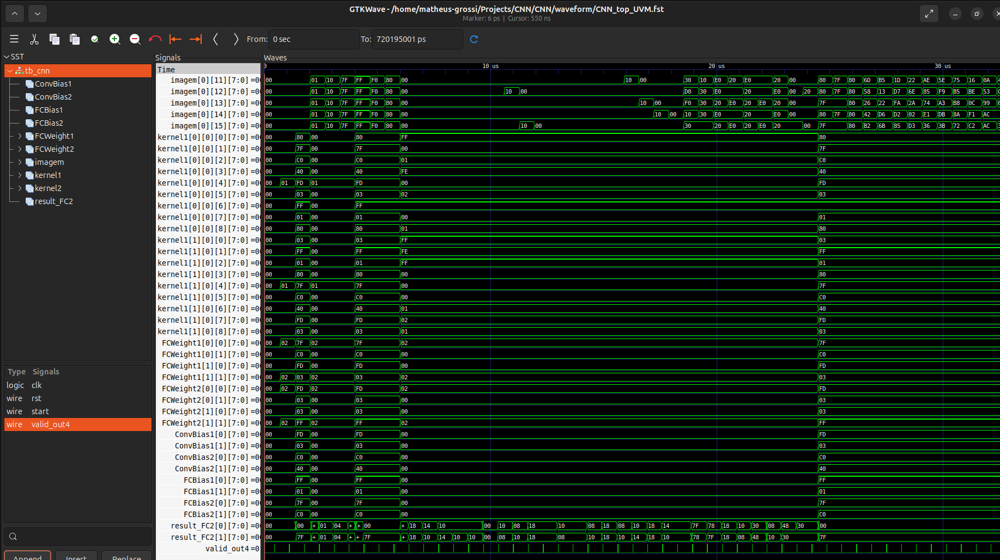
01 / ARQUITETURA
A arquitetura compreende duas camadas convolucionais, com quantização, ativação ReLU e max pooling, seguidas de duas camadas totalmente conectadas. O bloco Flatten reorganiza os mapas de características em um vetor de entrada para as camadas densas.
16 pixels · um canal
4 × 4 × 12 filtros · quantização · ReLU
4 × 4 × 2Máximo em regiões 2 × 2
2 × 2 × 22 filtros · quantização · ReLU
2 × 2 × 2Mapas reorganizados em vetor
2 valores2 neurônios em cada camada
result_FC2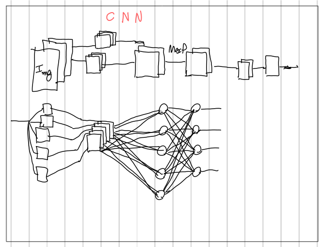
02 / IMPLEMENTAÇÃO
O fluxo de implementação mapeia a descrição lógica em células da biblioteca ASAP7. Os resultados apresentados incluem a composição de células após a síntese, as análises temporais e de potência e as representações gráficas da implementação física.
Os relatórios registram TNS e WNS iguais a zero para as restrições temporais da execução analisada.
Fonte: 6_finish.rpt ↗. Os resultados temporais correspondem às restrições e condições da execução documentada. Os resultados da verificação funcional são apresentados na seção de verificação UVM.
Visão conjunta das células padrão, das interconexões e da rede de alimentação no núcleo da implementação.
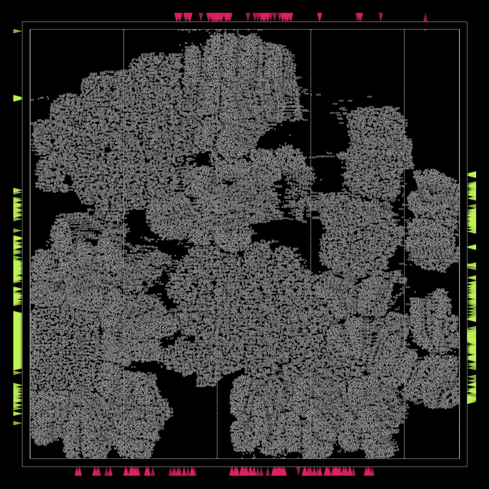
Distribuição espacial das células padrão na área do núcleo após o posicionamento.
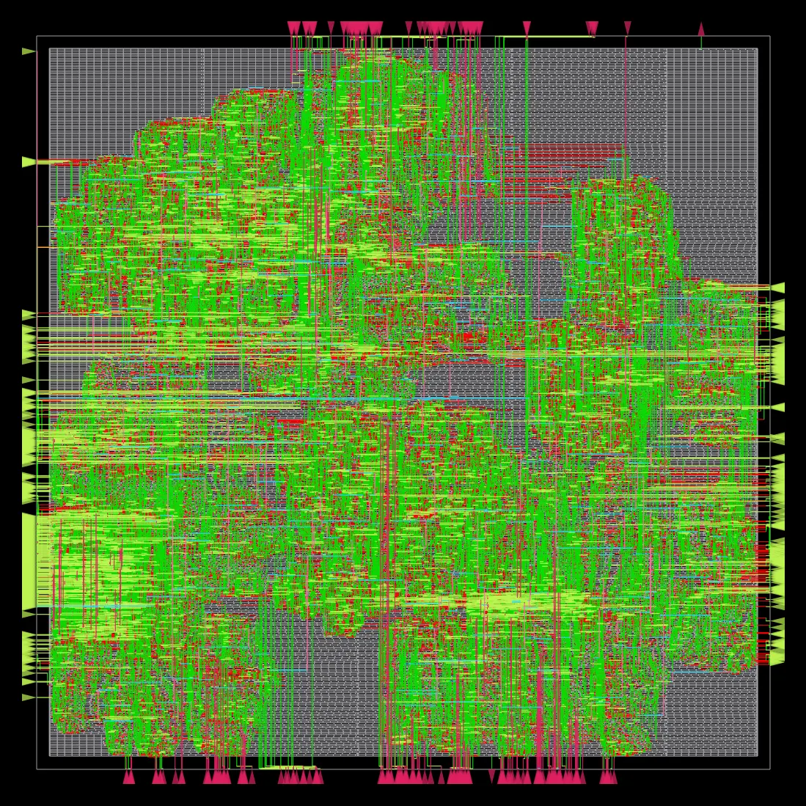
Distribuição das conexões entre células e terminais nas camadas de metal utilizadas pelo fluxo de implementação.
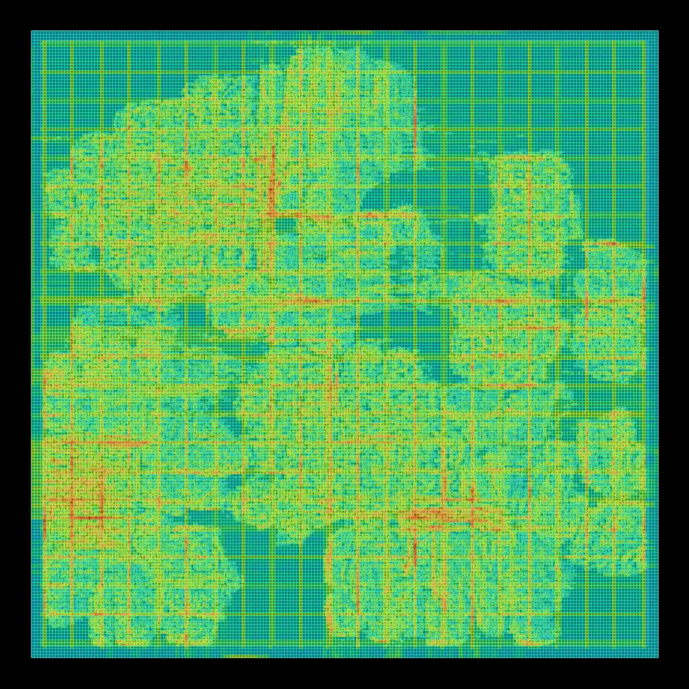
Distribuição espacial da demanda por recursos de roteamento, conforme a escala apresentada na imagem.
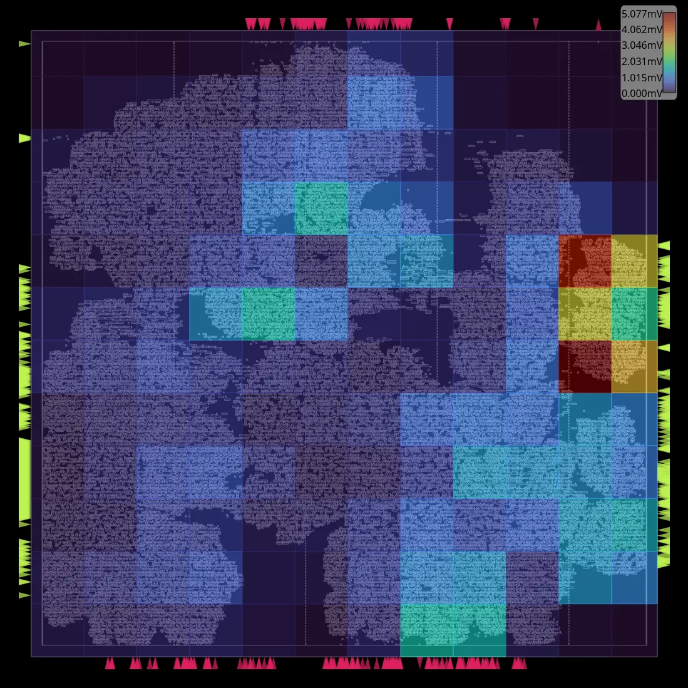
Estimativa da queda de tensão resistiva na rede de alimentação (IR drop), com escala em milivolts.
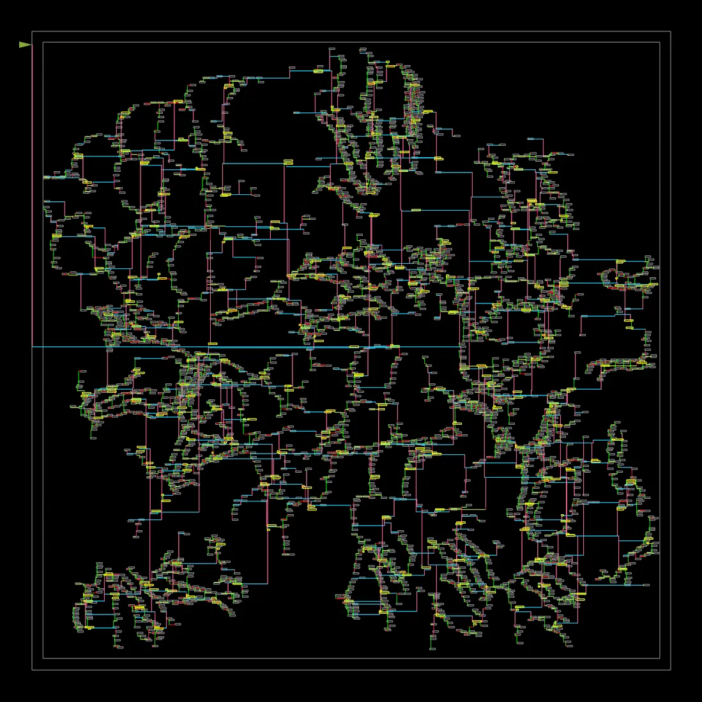
Representação das células e interconexões que compõem a rede de distribuição de clock no núcleo.
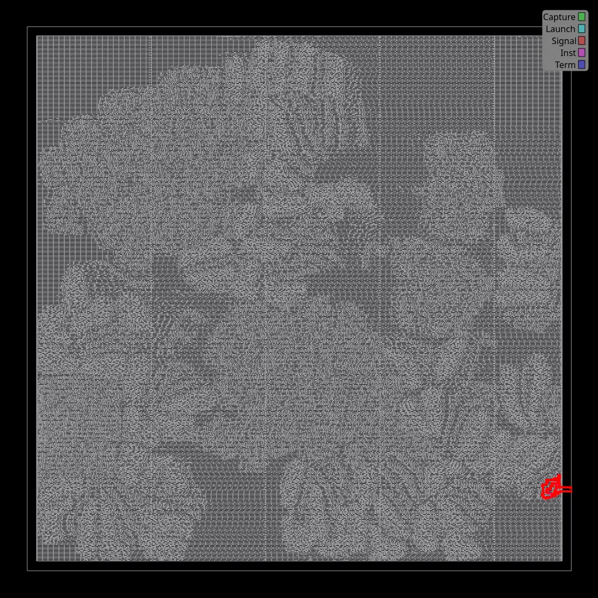
Representação, sobre o layout, do caminho selecionado pela análise de timing.
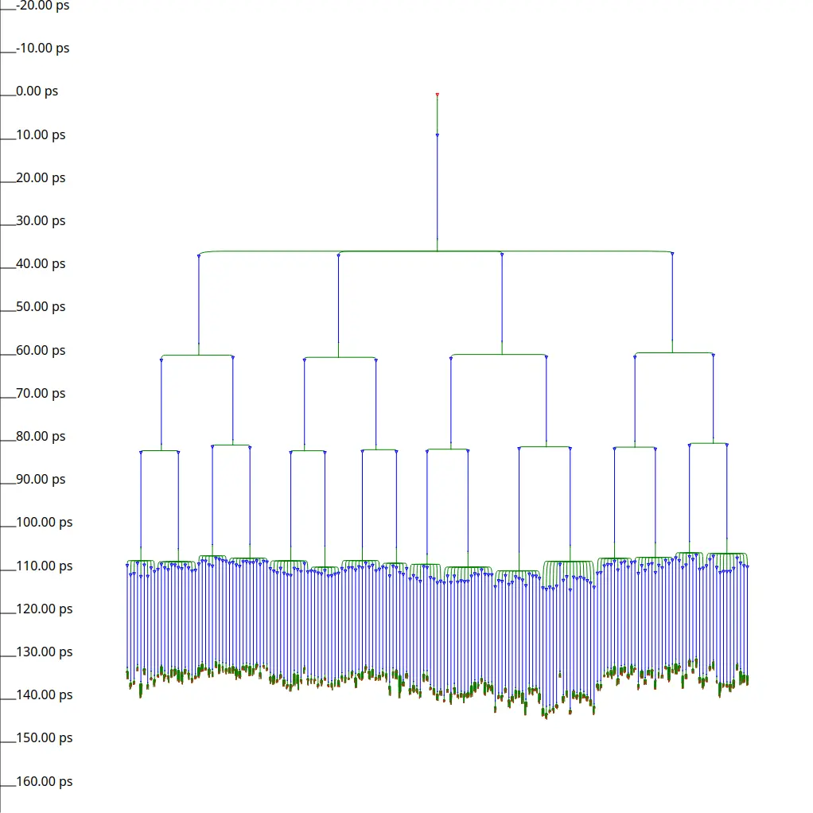
Representação das ramificações da árvore de clock core_clk, com escala temporal em picosegundos.
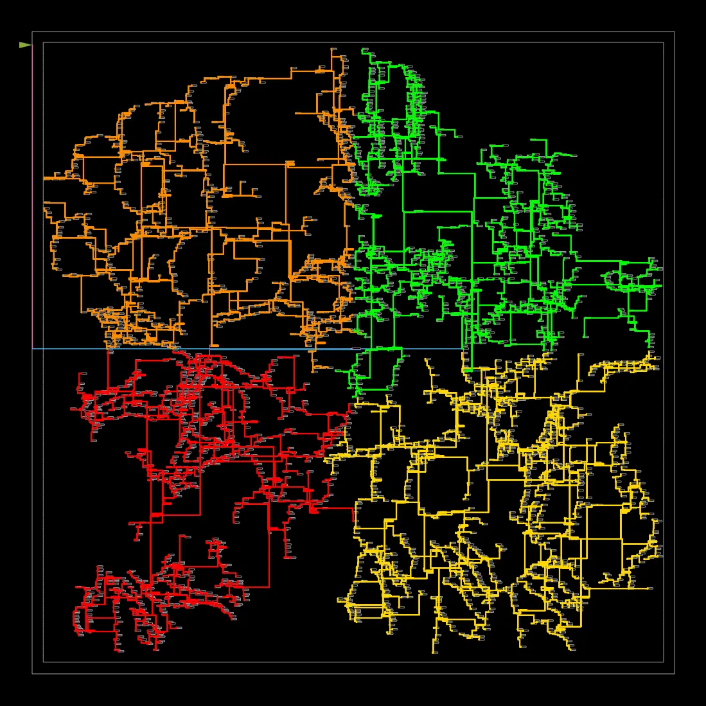
Representação da localização e da distribuição dos ramos da árvore de clock no layout.
| Tipo de célula | Quantidade | Área reportada |
|---|---|---|
INVx1_ASAP7_75t_R | 12.883 | 563,502 |
OA21x2_ASAP7_75t_R | 4.915 | 501,625 |
HAxp5_ASAP7_75t_R | 4.432 | 581,567 |
DFFHQNx1_ASAP7_75t_R | 3.352 | 977,443 |
AND2x2_ASAP7_75t_R | 3.039 | 265,852 |
FAx1_ASAP7_75t_R | 2.728 | 556,839 |
NAND2x1_ASAP7_75t_R | 1.931 | 168,924 |
XOR2x2_ASAP7_75t_R | 1.674 | 268,476 |
NOR2x1_ASAP7_75t_R | 1.364 | 119,323 |
BUFx2_ASAP7_75t_R | 1.242 | 90,542 |
AO21x1_ASAP7_75t_R | 1.205 | 105,413 |
AND3x1_ASAP7_75t_R | 1.183 | 103,489 |
OR3x1_ASAP7_75t_R | 1.131 | 98,940 |
OA211x2_ASAP7_75t_R | 1.088 | 126,904 |
XNOR2x2_ASAP7_75t_R | 1.007 | 161,503 |
OR2x2_ASAP7_75t_R | 756 | 66,135 |
OAI21x1_ASAP7_75t_R | 472 | 55,054 |
OR4x1_ASAP7_75t_R | 376 | 38,375 |
AOI21x1_ASAP7_75t_R | 339 | 39,541 |
AND4x1_ASAP7_75t_R | 260 | 26,536 |
AOI211x1_ASAP7_75t_R | 259 | 45,315 |
NOR3x1_ASAP7_75t_R | 204 | 32,718 |
AO221x1_ASAP7_75t_R | 197 | 28,723 |
AO211x2_ASAP7_75t_R | 159 | 37,092 |
OA31x2_ASAP7_75t_R | 151 | 33,024 |
OR5x1_ASAP7_75t_R | 148 | 17,263 |
NAND3x1_ASAP7_75t_R | 136 | 21,812 |
AND5x1_ASAP7_75t_R | 109 | 12,714 |
AO32x1_ASAP7_75t_R | 103 | 12,014 |
AOI221x1_ASAP7_75t_R | 87 | 17,758 |
AO31x2_ASAP7_75t_R | 86 | 20,062 |
AO22x1_ASAP7_75t_R | 81 | 10,629 |
AOI22x1_ASAP7_75t_R | 76 | 11,081 |
OAI22x1_ASAP7_75t_R | 71 | 10,352 |
BUFx3_ASAP7_75t_R | 65 | 5,686 |
OA22x2_ASAP7_75t_R | 34 | 4,957 |
OA221x2_ASAP7_75t_R | 27 | 6,299 |
AO222x2_ASAP7_75t_R | 22 | 3,849 |
AND2x4_ASAP7_75t_R | 15 | 2,187 |
OA222x2_ASAP7_75t_R | 15 | 2,624 |
OA33x2_ASAP7_75t_R | 15 | 2,187 |
AO33x2_ASAP7_75t_R | 13 | 1,895 |
BUFx4f_ASAP7_75t_R | 5 | 0,583 |
BUFx6f_ASAP7_75t_R | 4 | 0,583 |
AO22x2_ASAP7_75t_R | 3 | 0,437 |
AO221x2_ASAP7_75t_R | 2 | 0,321 |
NAND2x2_ASAP7_75t_R | 1 | 0,146 |
NAND3x2_ASAP7_75t_R | 1 | 0,292 |
NOR2x2_ASAP7_75t_R | 1 | 0,146 |
OR3x2_ASAP7_75t_R | 1 | 0,102 |
OR5x2_ASAP7_75t_R | 1 | 0,131 |
TIELOx1_ASAP7_75t_R | 1 | 0,044 |
03 / VERIFICAÇÃO UVM
A bancada UVM compara o vetor de saída do circuito com um modelo matemático independente, utilizando exclusivamente a interface pública do topo. A campanha compreende estímulos dirigidos, reset durante o processamento e 1.000 imagens pseudoaleatórias.
transações aprovadas
transações divergentes
canceladas por reset
transações exploratórias
zero_com_bias_W03
Resposta no ciclo 177, após 37 ciclos. Divergências nas saídas: 2.
bias_group_1_value_-45
Resposta no ciclo 69.081, após 37 ciclos. Divergências nas saídas: 1.
Reset e recuperação. O cenário IMG-18 provocou três cancelamentos por reset durante o processamento. As três transações de recuperação subsequentes foram aprovadas.
Sobreposição. As 12 transações do cenário IMG-19 foram classificadas como INCOMPLETE, pois a interface não especifica um protocolo de aceitação para solicitações sobrepostas.
Latência. A latência observada foi de 37 ciclos, dentro da janela de observação de 64 ciclos. Esse valor caracteriza a execução registrada; a campanha não estabeleceu um requisito de latência exata.
22 cenários na campanha.
| ID | Cenário | Inícios | PASS | FAIL | ABORT | INC. | Status |
|---|---|---|---|---|---|---|---|
IMG-00 | Imagem nula com variação de pesos e biases | 3 | 2 | 1 | 0 | 0 | FAIL |
IMG-01 | Constantes positivas | 3 | 3 | 0 | 0 | 0 | PASS |
IMG-02 | Constantes negativas | 3 | 3 | 0 | 0 | 0 | PASS |
IMG-03 | Impulsos internos | 5 | 5 | 0 | 0 | 0 | PASS |
IMG-04 | Impulsos nos cantos | 5 | 5 | 0 | 0 | 0 | PASS |
IMG-05 | Impulsos nas bordas | 9 | 9 | 0 | 0 | 0 | PASS |
IMG-06 | Gradiente horizontal | 1 | 1 | 0 | 0 | 0 | PASS |
IMG-07 | Gradiente vertical | 1 | 1 | 0 | 0 | 0 | PASS |
IMG-08 | Padrão em xadrez | 1 | 1 | 0 | 0 | 0 | PASS |
IMG-09 | Faixas horizontais | 2 | 2 | 0 | 0 | 0 | PASS |
IMG-10 | Faixas verticais | 2 | 2 | 0 | 0 | 0 | PASS |
IMG-11 | Diagonal principal | 1 | 1 | 0 | 0 | 0 | PASS |
IMG-12 | Diagonal secundária | 1 | 1 | 0 | 0 | 0 | PASS |
IMG-13 | Limites da representação com sinal | 3 | 3 | 0 | 0 | 0 | PASS |
IMG-14 | Imagens pseudoaleatórias | 1.000 | 1.000 | 0 | 0 | 0 | PASS |
IMG-15 | Variação dos conjuntos de pesos | 3 | 3 | 0 | 0 | 0 | PASS |
IMG-16 | Variação isolada dos biases | 8 | 7 | 1 | 0 | 0 | FAIL |
IMG-17 | Transações sequenciais sem sobreposição | 3 | 3 | 0 | 0 | 0 | PASS |
IMG-18 | Reset durante o processamento e recuperação | 6 | 3 | 0 | 3 | 0 | PASS |
IMG-19 | Solicitações de início sobrepostas | 12 | 0 | 0 | 0 | 12 | INCOMPLETE |
IMG-20 | Perturbação de um pixel | 17 | 17 | 0 | 0 | 0 | PASS |
IMG-21 | Arredondamento e saturação na quantização | 11 | 11 | 0 | 0 | 0 | PASS |
04 / COBERTURA
A cobertura de código corresponde aos arquivos do diretório src elaborados na instância da CNN. A cobertura funcional registra as classes de estímulos e os cruzamentos definidos nos covergroups da bancada, incluindo eventos do modelo de referência.
40 / 40 pontos
62 / 70 pontos
44 / 48 pontos
11.330 / 11.822 pontos
106 de 234 bins atingidos nos covergroups da bancada e do modelo
57 / 183 bins
5 / 5 bins
24 / 24 bins
3 / 3 bins
17 / 19 bins
Representação LCOV. 75/75 linhas físicas e 199/211 ramos. Os totais dessa representação diferem dos contadores nativos do Verilator.
Alcançabilidade. O cruzamento cenário × pesos inclui combinações não previstas na campanha. Dois bins de saturação negativa das camadas totalmente conectadas são inalcançáveis no modelo de referência, devido à aplicação de ReLU antes da quantização.
Interpretação. Os contadores de cobertura incluem estruturas exercitadas em transações aprovadas e reprovadas. A análise desses percentuais deve ser acompanhada dos resultados das comparações funcionais.
05 / FORMAS DE ONDA
As capturas do GTKWave apresentam os sinais públicos da bancada, registrados em formato FST com profundidade de hierarquia igual a 1. As 92 entradas e saídas são espelhadas no escopo tb_cnn. Os barramentos utilizam representação hexadecimal; em 8 bits com sinal, 7F corresponde a 127 e 80 corresponde a −128.
Registro inicial da simulação, com os pixels de entrada, os pesos, os biases, o vetor result_FC2 e os pulsos de valid_out4.
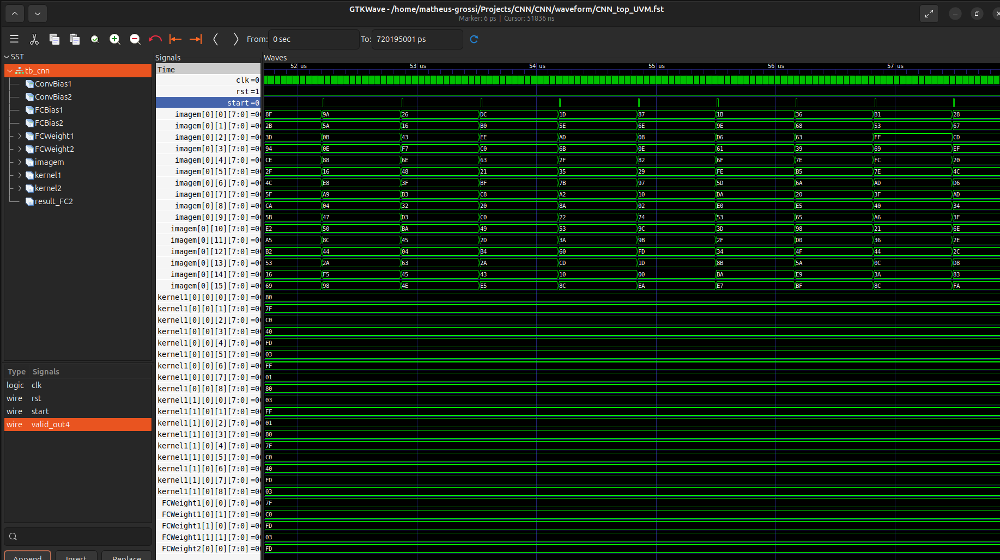
Registro entre aproximadamente 52 e 57 µs, com os sinais de clock e start e os 16 pixels da imagem de entrada.
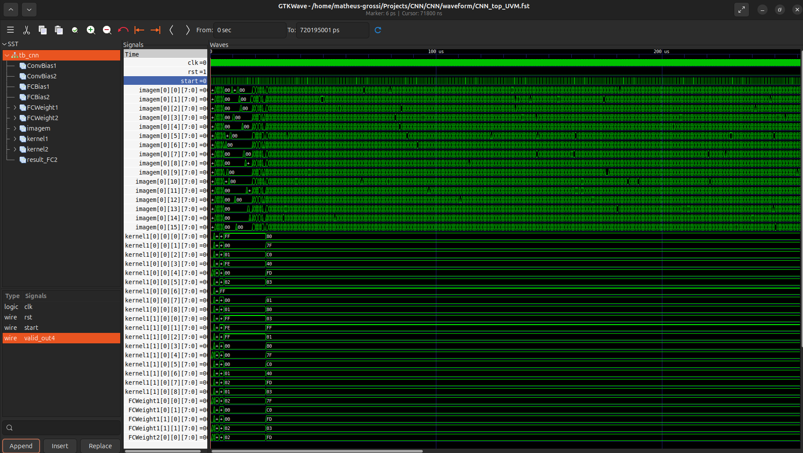
Visão temporal da sequência de solicitações de início, em escala de centenas de microssegundos.
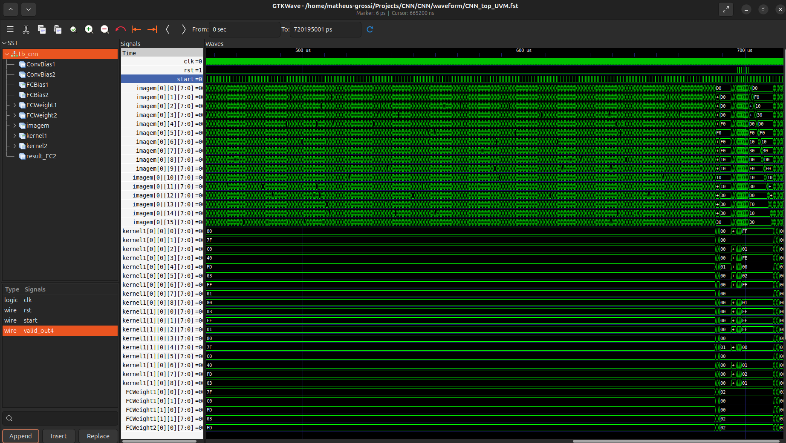
Registro do trecho final da simulação, incluindo os sinais de controle e as alterações dos pixels e dos conjuntos de pesos.
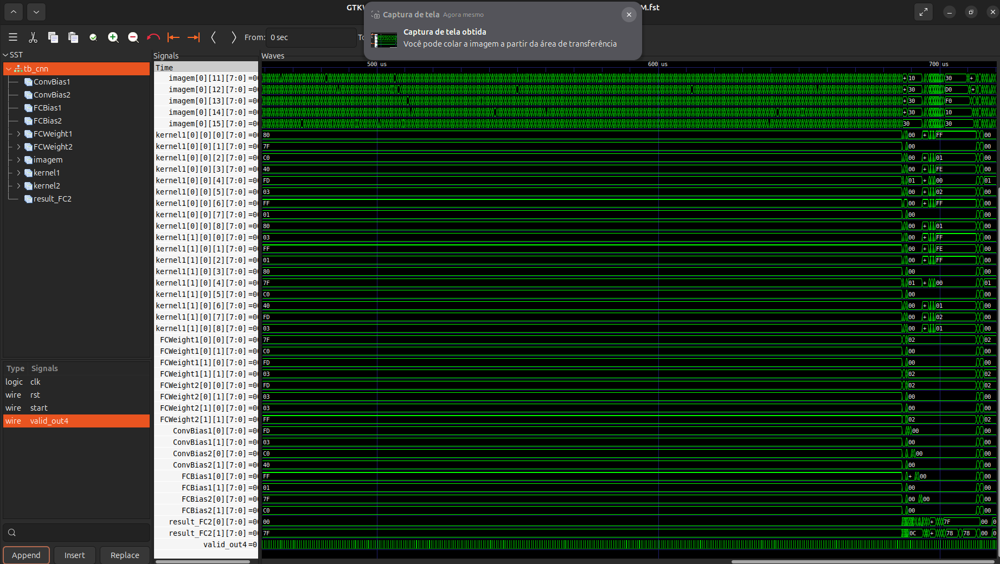
Registro dos barramentos de configuração, do vetor result_FC2 e do sinal de validade valid_out4.
Os valores esperados, os valores observados e a classificação de cada transação estão disponíveis no arquivo CSV e nos registros de simulação.
06 / DOCUMENTAÇÃO
Esta seção reúne a descrição da arquitetura, o plano de verificação, as instruções de simulação e os registros que fundamentam os resultados apresentados.
Descrição da arquitetura, organização do repositório e resultados documentados da CNN.
DOCUMENTO ↗Configuração da bancada, modelo matemático de referência, critérios de avaliação e especificação dos 22 cenários.
DOCUMENTO ↗Estrutura dos componentes UVM, procedimentos de execução e interpretação dos resultados da campanha.
DOCUMENTO ↗Instruções para execução das bancadas com Icarus Verilog e Verilator.
DOCUMENTO ↗Notas de arquitetura e referências acadêmicas que fundamentam o projeto.
DOCUMENTO ↗Proveniência dos registros de simulação, dos resultados por transação e dos indicadores de cobertura.
Os indicadores correspondem à campanha documentada em 25/10/2026 e foram extraídos dos artefatos versionados. A revisão informada abaixo identifica a geração deste site. Os registros disponíveis não identificam a revisão exata do RTL utilizada na campanha.
3c393a82 · alterações locais07 / BLOCOS
Os módulos implementam as operações aritméticas, a combinação dos canais, a quantização, a ativação e a reorganização dos dados. A integração desses componentes constitui as camadas convolucionais e totalmente conectadas da rede.
Integra as camadas da rede e disponibiliza a interface de entrada de pixels, pesos e biases, além do vetor de saída.
Arquivo no repositório ↗Organiza os filtros da camada convolucional, cada um responsável por um mapa de características de saída.
Arquivo no repositório ↗Combina as contribuições convolucionais dos canais de entrada com o bias associado ao filtro.
Arquivo no repositório ↗Calcula as somas de produtos entre os coeficientes do kernel e as janelas de dados de um canal de entrada.
Arquivo no repositório ↗Calcula a soma dos produtos entre elementos correspondentes dos vetores de entrada e de pesos.
Arquivo no repositório ↗Aplica a reescala dos resultados aritméticos e a redução da largura de representação numérica.
Arquivo no repositório ↗Aplica a função de ativação que preserva valores não negativos e substitui valores negativos por zero.
Arquivo no repositório ↗Seleciona o valor máximo de cada região de 2 × 2 elementos do mapa de características.
Arquivo no repositório ↗Reorganiza os mapas de características em um vetor destinado às camadas totalmente conectadas.
Arquivo no repositório ↗Calcula a soma ponderada das entradas, adiciona o bias e aplica a função de ativação.
Arquivo no repositório ↗Organiza os neurônios que processam o vetor de entrada de uma camada totalmente conectada.
Arquivo no repositório ↗